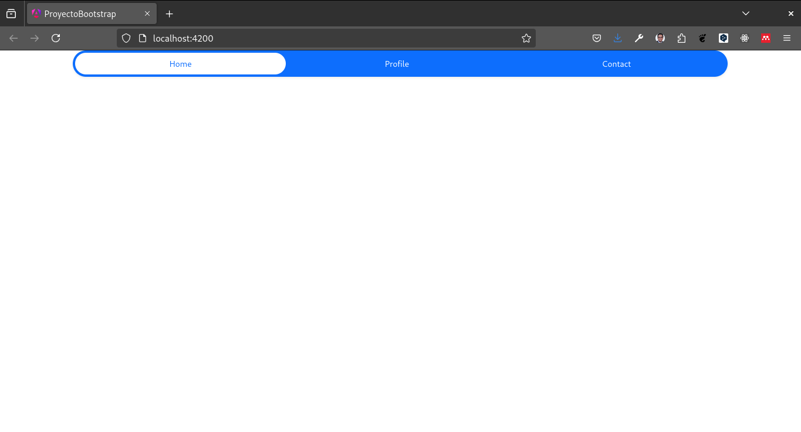
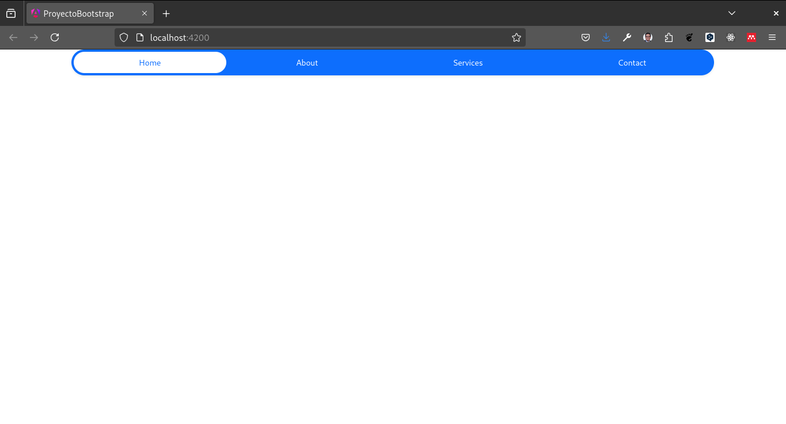

Bootstrap en Angular
En esta unidad aprenderemos a agregar Bootstrap a un proyecto Angular.
Introducción
Bootstrap es un framework de diseño que nos permite crear interfaces de usuario de forma rápida y sencilla. Bootstrap nos proporciona una serie de estilos CSS y componentes HTML que podemos utilizar en nuestros proyectos.
Para agregar Bootstrap a un proyecto Angular, podemos hacerlo de dos formas:
- Descargando los archivos CSS y JS de Bootstrap y agregándolos a nuestro proyecto.
- Utilizando la librería ngx-bootstrap.
En esta unidad aprenderemos a agrear Bootstrap mediante los archivos CSS y JS.
Creamos un proyecto Angular con el siguiente comando:
ng new proyecto-bootstrapNos ubicamos en la carpeta del proyecto:
cd proyecto-bootstrap
code .Agregando Bootstrap a un proyecto Angular
Para agregar Bootstrap al proyecto vamos a utilizar el CDN de Bootstrap. Vamos a agregar los archivos CSS y JS de Bootstrap en el archivo index.html que se encuentra en la carpeta src.
<!doctype html>
<html lang="en">
<head>
<meta charset="utf-8">
<title>ProyectoBootstrap</title>
<base href="/">
<meta name="viewport" content="width=device-width, initial-scale=1">
<link rel="icon" type="image/x-icon" href="favicon.ico">
1 <link href="https://cdn.jsdelivr.net/npm/bootstrap@5.3.3/dist/css/bootstrap.min.css" rel="stylesheet" integrity="sha384-QWTKZyjpPEjISv5WaRU9OFeRpok6YctnYmDr5pNlyT2bRjXh0JMhjY6hW+ALEwIH" crossorigin="anonymous">
</head>
<body>
<app-root></app-root>
2 <script src="https://cdn.jsdelivr.net/npm/bootstrap@5.3.3/dist/js/bootstrap.bundle.min.js" integrity="sha384-YvpcrYf0tY3lHB60NNkmXc5s9fDVZLESaAA55NDzOxhy9GkcIdslK1eN7N6jIeHz" crossorigin="anonymous"></script>
</body>
</html>- 1
- Agregamos el archivo CSS de Bootstrap.
- 2
- Agregamos el archivo JS de Bootstrap.
Creando un componente
Vamos a crear un componente llamado navbar que contendrá un menú de navegación.
ng g c navbarAgregando el componente a la aplicación principal
Vamos a agregar el componente navbar al archivo app.component.html.
<app-navbar></app-navbar>Agregamos tambien el componente navbar al archivo app.module.ts.
import { Component } from '@angular/core';
import { RouterOutlet } from '@angular/router';
import { NavbarComponent } from './navbar/navbar.component';
@Component({
selector: 'app-root',
standalone: true,
imports: [
RouterOutlet,
NavbarComponent
],
templateUrl: './app.component.html',
styleUrl: './app.component.css'
})
export class AppComponent {
title = 'proyecto-bootstrap';
}Agregando un contenedor
Vamos a agregar un contenedor a la aplicación para centrar el contenido.
<div class="container">
<app-navbar></app-navbar>
</div>Ejecutando la aplicación
Vamos a ejecutar la aplicación con el siguiente comando:
ng serve -oSi todo salio bien deberíamos ver el menú de navegación en la aplicación.

Reto
Agrega un menú de navegación a la aplicación que contenga los siguientes elementos:
- Home
- About
- Services
- Contact
Utiliza los estilos de Bootstrap para darle un aspecto agradable al menú.
Posible solución
<ul class="nav nav-pills nav-fill gap-2 p-1 small bg-primary rounded-5 shadow-sm" id="pillNav2" role="tablist" style="--bs-nav-link-color: var(--bs-white); --bs-nav-pills-link-active-color: var(--bs-primary); --bs-nav-pills-link-active-bg: var(--bs-white);">
<li class="nav-item" role="presentation">
<button class="nav-link active rounded-5" id="home-tab2" data-bs-toggle="tab" type="button" role="tab" aria-selected="true">Home</button>
</li>
<li class="nav-item" role="presentation">
<button class="nav-link rounded-5" id="about-tab2" data-bs-toggle="tab" type="button" role="tab" aria-selected="false">About</button>
</li>
<li class="nav-item" role="presentation">
<button class="nav-link rounded-5" id="services-tab2" data-bs-toggle="tab" type="button" role="tab" aria-selected="false">Services</button>
</li>
<li class="nav-item" role="presentation">
<button class="nav-link rounded-5" id="contact-tab2" data-bs-toggle="tab" type="button" role="tab" aria-selected="false">Contact</button>
</li>
</ul>
Conclusión
Hemos aprendido a agregar Bootstrap a un proyecto Angular. Bootstrap nos permite crear interfaces de usuario de forma rápida y sencilla. En la siguiente unidad aprenderemos a agregar estilos personalizados a un proyecto Angular.